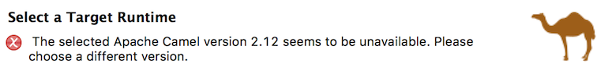
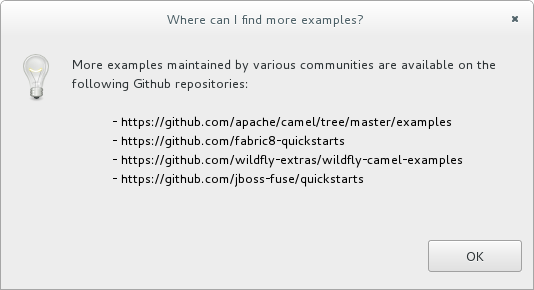
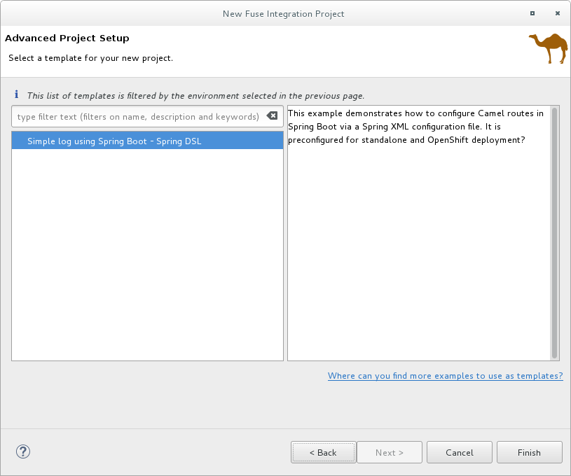
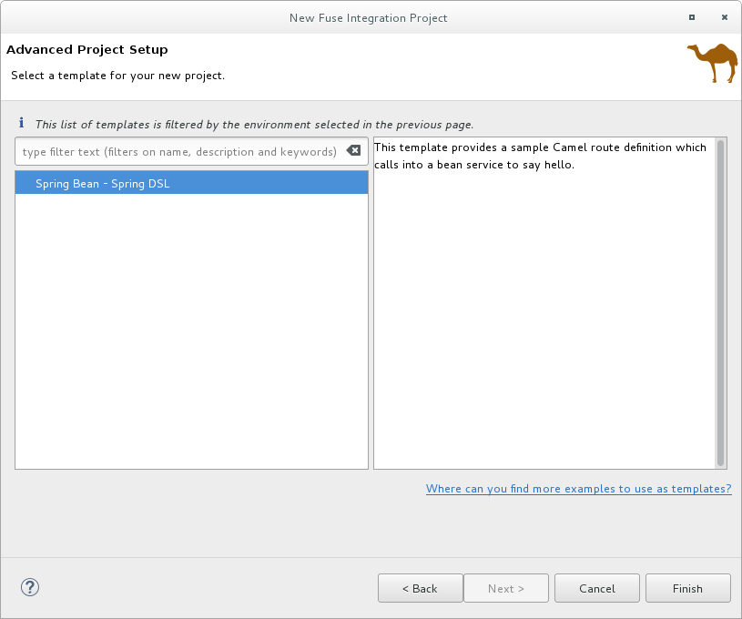
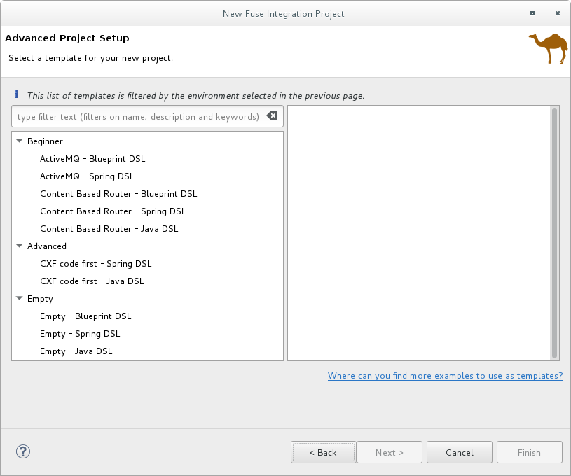

Creating a new Fuse Integration project involves these main steps:
After you configure the project, the tooling downloads all of the required Maven dependencies and creates the POM file needed to run and publish the project.
![[Note]](imagesdb/note.png) | Note |
|---|---|
The first time that you build a Fuse project in CodeReady Studio, it might take several minutes for the wizard to finish generating the project as it downloads dependencies from remote Maven repositories. |
Before you create a new Fuse Integration project, you should have the following information:
- Your target runtime environment: Fuse on OpenShift or Fuse standalone (Spring Boot, Fuse on Karaf, or Fuse on EAP)
- The Camel version (if other than the default used by the tooling)
To create a new Fuse Integration project, follow these steps:
Select New → Project → Red Hat Fuse → Fuse Integration Project to open the New Fuse Integration Project wizard.
The wizard opens with the Use default workspace location option selected in the Location pane.

- In Project Name, type a name for the new project, for example
MySampleProject. Specify the workspace location in which you want to store the data for the project.
- To use the default workspace, leave the Use default workspace location option enabled.
To use an alternative location clear the Use default workspace location option and specify a location in the Path field.
Click
 to quickly find and select an alternate workspace.
to quickly find and select an alternate workspace.
- Click Next to open the Select a Target Environment page.
When you create a new project, you specify the project’s target deployment environment so that your project has the resources it needs at runtime. You must select a deployment platform and a Camel version. Optionally, you can specify a runtime configuration.
With the Select a Target Environment page open:
Select whether you want to deploy the project on Kubernetes/OpenShift or on a Standalone platform.

If you select Kubernetes/OpenShift for the deployment platform, the Sprint Boot runtime is automatically selected and you can skip to Step 3.
If you select Standalone for the deployment platform:
Choose a target runtime environment:
- Spring Boot
- Karaf/Fuse on Karaf
- Wildfly/Fuse on EAP
For the Karaf and EAP standalone runtime environments, choose one of the following options for the runtime configuration:
- Accept the None selected option (you can define the runtime configuration later).
- Select an existing runtime configuration from the drop-down menu.
- Create a new runtime configuration as described in Creating a new target runtime (optional).
In the Select the Camel version for your new project pane, accept the default Camel version associated with the runtime or change the default by:
- Selecting a Camel version from the drop-down list. Fuse Tooling supports the listed productized versions.
Typing a different Camel version if you want to experiment with non-productized versions (that are not supported).
You can click the Verify button to check whether the tooling can access the specified version. If not, a notification similar to the following example appears in the Select a Target Runtime page header:
Note After you create, configure, and save a project, you can change the Camel version. See Changing the Camel version.
- After you choose a runtime environment and a Camel version on which to base your new Fuse Integration project, click Next to open the wizard’s Advanced Project Setup page and then follow the steps in Selecting a project template.
For the Karaf and EAP standalone runtime environments, you can optionally create a new runtime configuration from the New Fuse Integration Project wizard.
From the wizard’s the Select a Target Runtime page, click New to open the New server runtime environment page:

Expand the
Red Hat JBoss Middlewarefolder, and then select a Red Hat Fuse runtime environment.Leave the Create a new local server option unchecked. You can create the local server later when you are ready to publish your project (see Adding a Server).
Note If you check the Create a new local server option, the New Fuse Integration Project wizard walks you through additional steps to define and configure the Fuse server runtime (as described in Adding a Server). Then, when it builds the project, it also adds the server runtime to the Servers view in the Fuse Integration perspective.
Click Next to open the server’s New Server Runtime Environment page:

Specify the Name, Home Directory, Execution Environment of the server runtime:
- Name — Accept the default or enter a new name for the runtime environment.
Home Directory — Click the Browse button to locate and select the server runtime’s installation directory.
Note If the server is not already installed on your machine, you can install it now by clicking the Download and install runtime link and then following the site’s download instructions. Depending on the site, you might be required to provide valid credentials before you can continue the download process.
Runtime JRE: Execution Environment — Accept the default or select another JavaSE version from the drop-down list.
If the version that you want does not appear on the list, click the Environments button and select the version from that list. The JRE version that you select must be installed on your machine.
Note Fuse 7.x requires JRE version 1.8.
- Runtime JRE: Alternate JRE - If your project requires a different version of Java, you can use this option.
Click Finish to return to the New Fuse Integration Project wizard’s Select a Target Runtme page:
The newly configured target runtime appears in the Target Runtime pane’s drop-down menu, and the Camel version supported by the runtime appears in the Camel Version pane, grayed out.
After you create a Fuse Integration project, it is possible to change the Camel version. See Changing the Camel version.
- Click Next to specify a template for the project as described in Selecting a project template.
The Advanced Project Setup page provides a list of templates that you can use as a starting point for your new project. The templates, based on common use cases, provide sample code and data to get you started quickly. The list of available templates depends on the runtime environment that you selected on the previous page. Select a template to view its description in the right pane.
| Note |
|---|---|
If you do not see a template that meets your requirements, you can click the Where can I find more examples to use as templates? link to open an information dialog with a list of URLs with more examples:  To use one of these examples:
|
For Fuse on OpenShift there is a single template that demonstrates how to configure Camel routes in Spring Boot using a Spring XML configuration file. This template creates a Fuse Integration project and requires a Camel version newer than 2.18.1.redhat-000012.
This template creates a project that runs on OpenShift servers, and it supports the Spring DSL only. For details on using this template, see Getting Started with Fuse on OpenShift.
For Wildfly or Fuse on EAP there is a single template that provides a sample Camel route that calls into a bean service to say "Hello". This template creates a project that runs on Red Hat EAP servers, and it supports the Spring DSL only.
For Karaf or Fuse on Karaf, you have a choice of templates. You can create an empty project, which creates a skeleton Camel context routing file based on one of the three supported Domain Specific Languages (DSLs), or you can use a predefined template, each of which is based on a common use case. Individual templates might not support all DSL options.
Note For Java DSL, the tooling generates a
CamelRoute.javafile that you can edit in the tooling’s Java editor, but it does not generate a graphical diagram representation of it.Content Based Router — Provides a sample Camel route that reads files from a specific location and routes them to different output folders according to message content.
This template creates a project that runs on Red Hat Fuse servers, and it supports all three of the DSLs.
CXF code first — Provides a sample Camel route that is started by a CXF web service call.
This template creates a project that runs on Red Hat Fuse servers, and it supports the Spring and Java DSLs only.
- Select a template from the list.
Click Finish.
The tooling starts building the project and adds it to the Project Explorer view.
If the Fuse Integration perspective is not already open, the tooling asks whether you want to switch to it now:

Click Yes to open the new project in the Fuse Integration perspective:

The project appears in the Project Explorer view. By default, the project includes an Apache Camel context (XML) file.
Click the Source tab at the bottom of the canvas to see the generated Camel context file:

| Note |
|---|---|
If you want to add another new Camel context file to the project, see Creating a New Camel XML file. When you build a project that uses CXF you might want the build process to
automatically operate on the Java files to generate WSDL files.
To do this, configure the |
You might encounter Maven dependency errors after you create a new Fuse Integration project.
Though it can happen at other times, it more typically occurs when you cancel a project build before the process has finished. Interrupting the process in this way often prevents all of the project’s dependencies from downloading from the Maven repositories, which can take some time.
You can often resolve these dependency errors by updating Maven dependencies as follows:
- In the Project Explorer view, right-click the root project to open the context menu.
- Select Maven → Update Project.
In the Update Maven Project wizard:
- Select the project that you want to update, if more than one appears in the wizard’s list.
- Click the Force Update of Snapshots/Releases option to enable it.
Click OK.
In the bottom, right corner of the workbench, you can view the progress status bar churning as missing dependencies are downloaded from the Maven repositories.